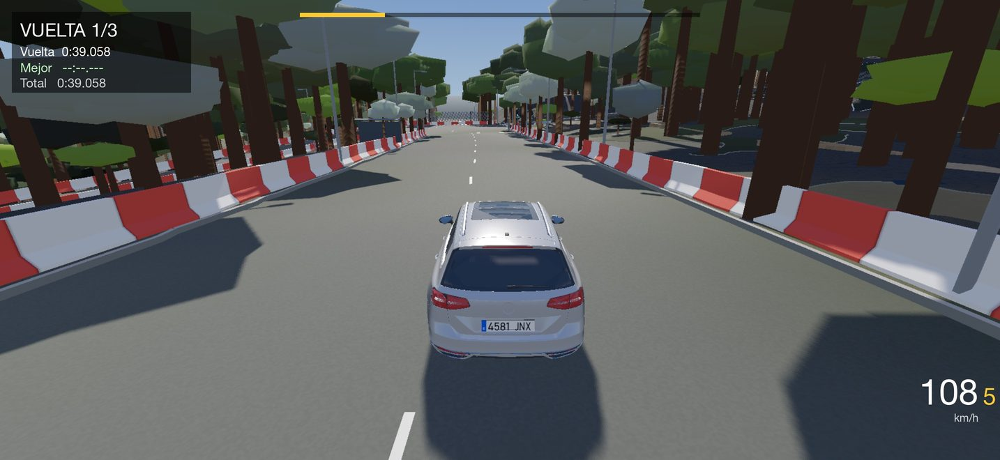

Raba Kart · iPhone y iPad
Raba Kart · iPhone y iPad
Soporte
JUEGO EN DESARROLLO ACTIVO
¿Algo no va bien o tienes una idea? Escríbenos y cuéntanos qué dispositivo usas y qué pasó. Respondemos lo antes posible.
Requisitos
iPhone o iPad con chip A12 Bionic o posterior (iPhone XS, XR o más nuevo) e iOS 15 o posterior.
Preguntas frecuentes
- ¿Cómo se conduce sin mando?
- Gira el iPhone como un volante para girar y usa los pedales táctiles de la pantalla para acelerar y frenar.
- ¿Qué mandos funcionan?
- Los de PlayStation, Xbox y los mandos MFi. Conéctalo por Bluetooth en Ajustes antes de abrir el juego.
- ¿Cómo cambio la matrícula o el color?
- En el selector de coche, con los botones «Color» y «Matrícula», o desde el menú de pausa.
- ¿Cómo importo un coche?
- Copia el archivo del coche (.zip) en Archivos › En mi iPhone › Raba Kart y pulsa «Importar» en el selector de coche.
- Mi coche se ha quedado destrozado o atascado
- Pulsa el botón ↺ de la pantalla: el coche vuelve a la carretera y, si el motor no arranca, sale reparado. «Reiniciar carrera», en el menú de pausa, empieza de cero con el coche nuevo.
- ¿Recoge datos el juego?
- No. Funciona sin conexión y no envía nada. Lo explica la política de privacidad.
Un juego que crece
Raba Kart está en desarrollo activo y cada actualización trae mejoras: circuitos, coches, gráficos y conducción. Tus comentarios nos ayudan a decidir qué viene después.
Support (English)
Raba Kart is a racing game on real streets of Catalonia for iPhone and iPad (A12 chip or later, iOS 15 or later). For help or feedback, email rabaffffhh@gmail.com. The game collects no data; see the privacy policy.